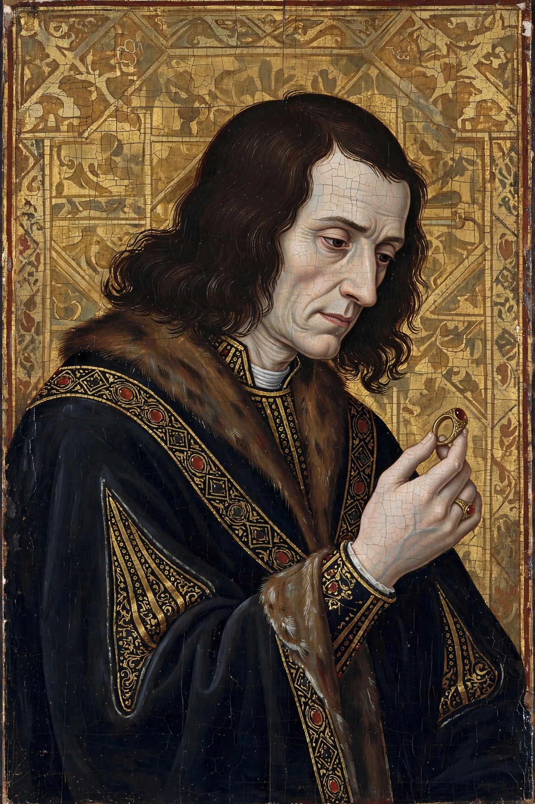

| Richard III | |
|---|---|
 | |
| Reign | 26 June 1483 – 22 August 1485 |
| Coronation | 6 July 1483 |
| Predecessor | Edward V (uncrowned) |
| Successor | Henry VII |
| Born | 2 October 1452, Fotheringhay Castle |
| Died | 22 August 1485 (aged 32), Battle of Bosworth Field |
| Burial | Greyfriars, Leicester; reinterred Leicester Cathedral, 2015 |
| Spouse | Anne Neville |
| House | York (Plantagenet) |
Richard III (2 October 1452 – 22 August 1485) was King of England from June 1483 until his death at the Battle of Bosworth Field two years later — the last king of the House of York, the last of the Plantagenet dynasty, and the last English king to die in battle. His accession, after the disappearance of his nephews the "Princes in the Tower", has been controversial ever since; Tudor writers, above all Shakespeare, fixed his image as a villainous usurper, while modern defenders argue for a capable administrator smeared by propaganda.
Richard was the youngest surviving son of Richard, Duke of York, whose claim to the throne ignited the Wars of the Roses. His father and elder brother Edmund were killed at Wakefield in 1460, but in 1461 his eldest brother became Edward IV. Created Duke of Gloucester, Richard proved a loyal and able lieutenant: he governed the north of England from Middleham Castle, won a formidable reputation there, and commanded in the campaigns of 1471 (Barnet and Tewkesbury) and the invasion of Scotland in 1482, which recovered Berwick. He married Anne Neville, daughter of the Earl of Warwick and widow of the Lancastrian Prince of Wales.
On Edward IV's sudden death in April 1483, Richard became Lord Protector for his twelve-year-old nephew Edward V. Within weeks, Richard's supporters declared Edward IV's marriage invalid and his children illegitimate — formalised later in the act Titulus Regius — and on 26 June Richard took the throne himself. Edward V and his younger brother Richard, lodged in the Tower of London, were seen less and less often and then not at all; their fate is unknown. Suspicion fell on Richard at the time and has never been dispelled, though other candidates have been proposed. In October 1483 a rebellion led by the Duke of Buckingham — with support growing for the exiled Henry Tudor — was crushed, but Henry's claim gathered strength.
Richard's only Parliament (1484) passed respected legislation: it abolished "benevolences" (forced gifts to the crown), reformed bail and jury rules, and ordered the laws and statutes to be printed in English. Richard founded the Council of the North and the College of Arms and showed genuine interest in administration and justice for ordinary petitioners. The deaths of his son Edward of Middleham (1484) and of Queen Anne (March 1485) weakened him, and rumours that he intended to marry his niece Elizabeth of York damaged him further.
Henry Tudor landed in Wales in August 1485. On 22 August, near Market Bosworth in Leicestershire, Richard's larger army was undone by the intervention of the Stanleys on Henry's side; Richard led a desperate cavalry charge that came within yards of Henry before he was cut down. His body was stripped, carried to Leicester, and buried without ceremony in the church of the Greyfriars. In 2012, archaeologists excavating a Leicester car park on the Greyfriars site found a skeleton with severe scoliosis — a curvature Richard was said to have had — and battle wounds; DNA comparison with descendants of his sister confirmed the identification in 2013. He was reinterred with ceremony in Leicester Cathedral on 26 March 2015.
See also: Battle of Bosworth Field · Princes in the Tower · Wars of the Roses · Edward IV